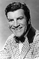
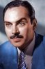
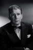

Country:United States, 90 minutes
Spoken languages:
Genres:Drama
Director(s):Stuart Heisler
Writer(s):Frank S. Nugent, Curtis Kenyon
Video Codec:Unknown
Number: 1459


Certification:
Storyline:
It's Tulsa, Oklahoma at the start of the oil boom and Cherokee Lansing's rancher father is killed in a fight with the Tanner Oil Company. Cherokee plans revenge by bringing in her own wells with the help of oil expert Brad Brady and childhood friend Jim Redbird. When the oil and the money start gushing in, both Brad and Jim want to protect the land but Cherokee has different ideas. What started out as revenge for her father's death has turned into an obsession for wealth and power.
Cast:   

Medium: Original DVD,
Comments: Part of: Leading Ladies - Classic 20 Movie Collection
Loaned: No
Aspect ratio: Unknown